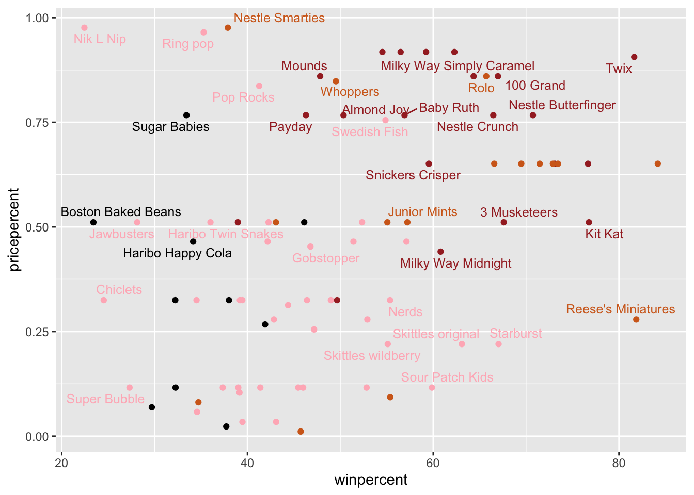

Q6: The variable win percent because the numbers deviate drastically from all the other Variables. Q7. 0 means False. 1 means True so in this case 0 means no chocolate, 1 means yes chocolate.
hist(candy$winpercent)
c = candy$winpercent[as.logical(candy$chocolate)]f = candy$winpercent[as.logical(candy$fruity)] n =candy$winpercent[as.logical(candy$nougat)]mean(c)
[1] 60.92153
mean(f)
[1] 44.11974
mean(n)
[1] 60.05188
t.test(c,f)
Welch Two Sample t-test
data: c and f
t = 6.2582, df = 68.882, p-value = 2.871e-08
alternative hypothesis: true difference in means is not equal to 0
95 percent confidence interval:
11.44563 22.15795
sample estimates:
mean of x mean of y
60.92153 44.11974
Q8: See above for code to generate the histogram. Q9: The histogram is not symmetrical Q10: The center is below 50 Q11: On average, the chocolate type of candies is higher ranked than the fruit type of candies. Q12: Yes, the p value is 2.871e -08 which is less than .05, indicating a significant difference between chocolate and fruit candies.
head(candy[order(candy$winpercent),], n=5)
chocolate fruity caramel peanutyalmondy nougat
Nik L Nip 0 1 0 0 0
Boston Baked Beans 0 0 0 1 0
Chiclets 0 1 0 0 0
Super Bubble 0 1 0 0 0
Jawbusters 0 1 0 0 0
crispedricewafer hard bar pluribus sugarpercent pricepercent
Nik L Nip 0 0 0 1 0.197 0.976
Boston Baked Beans 0 0 0 1 0.313 0.511
Chiclets 0 0 0 1 0.046 0.325
Super Bubble 0 0 0 0 0.162 0.116
Jawbusters 0 1 0 1 0.093 0.511
winpercent
Nik L Nip 22.44534
Boston Baked Beans 23.41782
Chiclets 24.52499
Super Bubble 27.30386
Jawbusters 28.12744
Q13: The 5 least liked candy are Nik L Nip, Boston Baked Beans, Chiclets, Super Bubble, and Jawbusters. Makes sense because these sound gross! Q14: The 5 most liked candy are Snickers, Kit Kats, Twix, Reese’s Miniatures, and Reese’s Peanut Butter Cups.
Q17: NIK L Nip is ranked as the worst candy. Q18: Reese’s Peanut Butter cup is ranked as the best candy.
library(ggrepel)# How about a plot of price vs winggplot(candy) +aes(winpercent, pricepercent, label=rownames(candy)) +geom_point(col=my_cols) +geom_text_repel(col=my_cols, size=3.3, max.overlaps =5)
Warning: ggrepel: 50 unlabeled data points (too many overlaps). Consider
increasing max.overlaps

ord <-order(candy$pricepercent, decreasing =TRUE)head( candy[ord,c(11,12)], n=5 )
pricepercent winpercent
Nik L Nip 0.976 22.44534
Nestle Smarties 0.976 37.88719
Ring pop 0.965 35.29076
Hershey's Krackel 0.918 62.28448
Hershey's Milk Chocolate 0.918 56.49050
Q19. Fruity candies are ranked the highest and are cheapest. Q20. The most expensive candies are Nik L Nip, Nestle Smarties, Ring Pop, Hershey’s Krackel, and Hershey’s milk chocolate. Of these, Nik L Nips are the least popular.
library(corrplot)
corrplot 0.95 loaded
cij <-cor(candy)corrplot(cij)
Q22. Fruity vs chocolate, and bar vs pluribus are anti-correlated. Q23. Chocolate and win percent are two variables that are most positively correlated with each other.
Q24. The three variables in the positive direction of PC1 are fruity, hard, and pluribus. This makes sense to me because fruit candy are often assorted and hard candies.